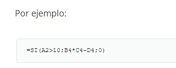

Una condicional es una funcion
que nos permite realizar una acción
siempre y cuando se cumpla con una
condición determinada por el usuario
Como se utiliza
este es un ejemplo de sintaxis que
podemos tomar como referencia

Cual es el funcionamiento de las funciones condicionadas
el funcionamiento es condicionar cierta accion
haciendo que solamente se cumpla lo establecido
y esa condicion tiene que ser cumplida solo si
esta digitada correctamente